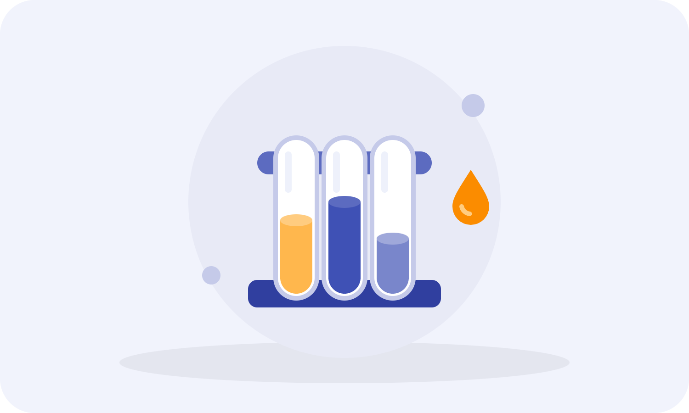
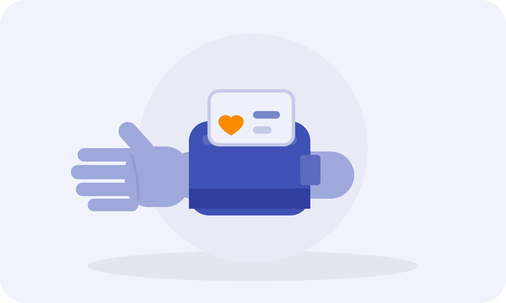
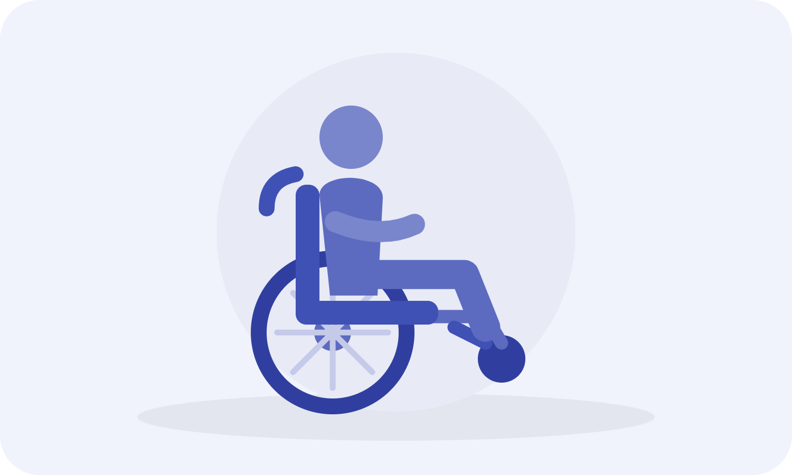
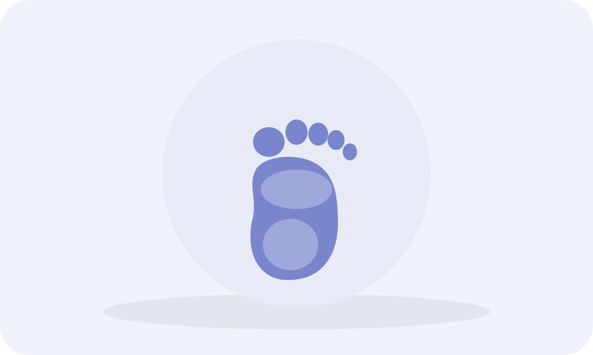
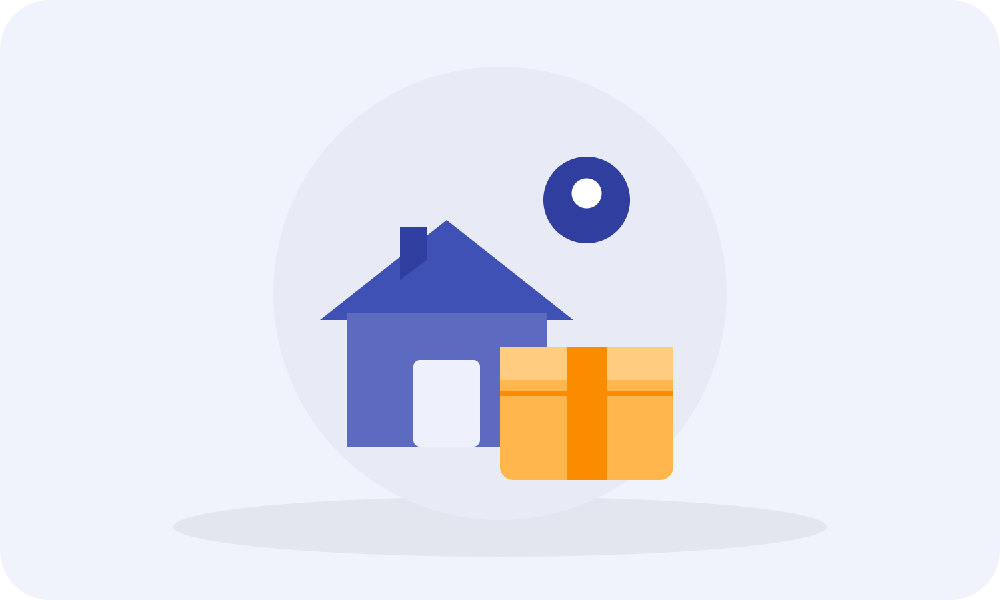
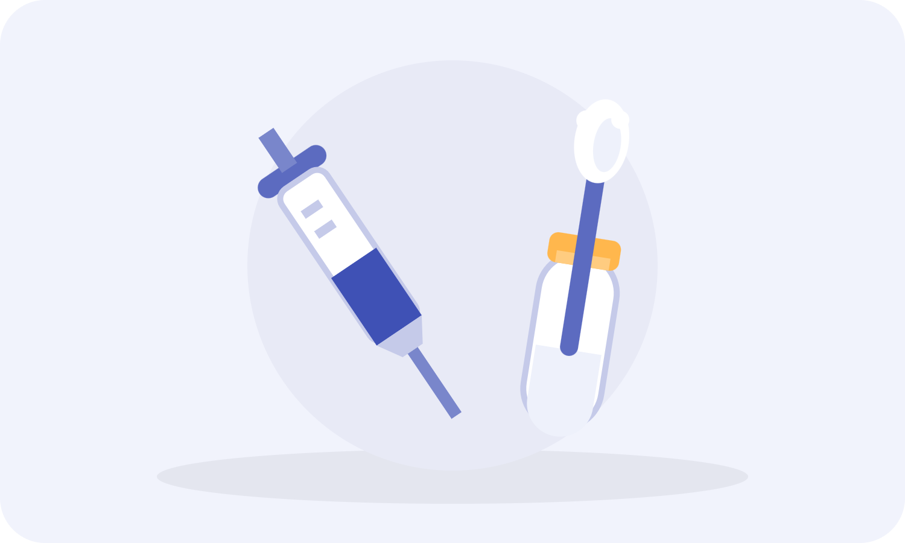

Cosa offriamo
Molto più della semplice vendita di farmaci: analisi, consulenze e servizi pensati per la vostra salute.

Con un semplice prelievo di sangue capillare potrete conoscere i valori ematologici più comuni quali glicemia, emoglobina glicata, trigliceridi, colesterolo totale (LDL e HDL) e creatinina. In pochi minuti un risultato affidabile e preciso, sovrapponibile ai test di laboratorio.

Potrete controllare in qualsiasi momento i valori della vostra pressione arteriosa con il nostro apparecchio, rapido e affidabile. In pochi secondi potrete anche verificare la saturazione dell'ossigeno nel sangue. Servizio gratuito.
La Farmacia offre ai clienti un servizio di prenotazione esami e visite mediche, previa presentazione di impegnativa mutualistica, e di ritiro referti con le strutture convenzionate.

A disposizione per il noleggio: stampelle, carrozzine pieghevoli, deambulatori, materassi antidecubito, letti, tens, magnetoterapia, ultrasuoni. Si affittano anche bilance pesaneonati e tiralatte.

Un professionista esterno si occupa della salute dei vostri piedi: micosi ungueali, unghie incarnite, valutazione posturale e confezionamento di protesi personalizzate.

Servizio di consegna gratuita dei farmaci a domicilio, destinato a chi si trova in difficoltà. Attivo nel Comune di None e zone limitrofe.
Foratura del lobo dell'orecchio con sistema INVERNESS®: sterilità, sicurezza, assenza di dolore. Orecchini anallergici, senza nichel, eseguita solo da personale specializzato con dispositivi monouso.
Richiedi la nostra tessera fedeltà: attivazione gratuita e senza vincoli, raccolta punti per un buono sconto spendibile su ogni acquisto. La promozione non ha scadenza.
Convenzionati per la fornitura di prestazioni di assistenza protesica con ASL e INAIL. Vi aiutiamo nelle procedure di autorizzazione e nella compilazione dei preventivi degli ausili riconosciuti dal SSN.
